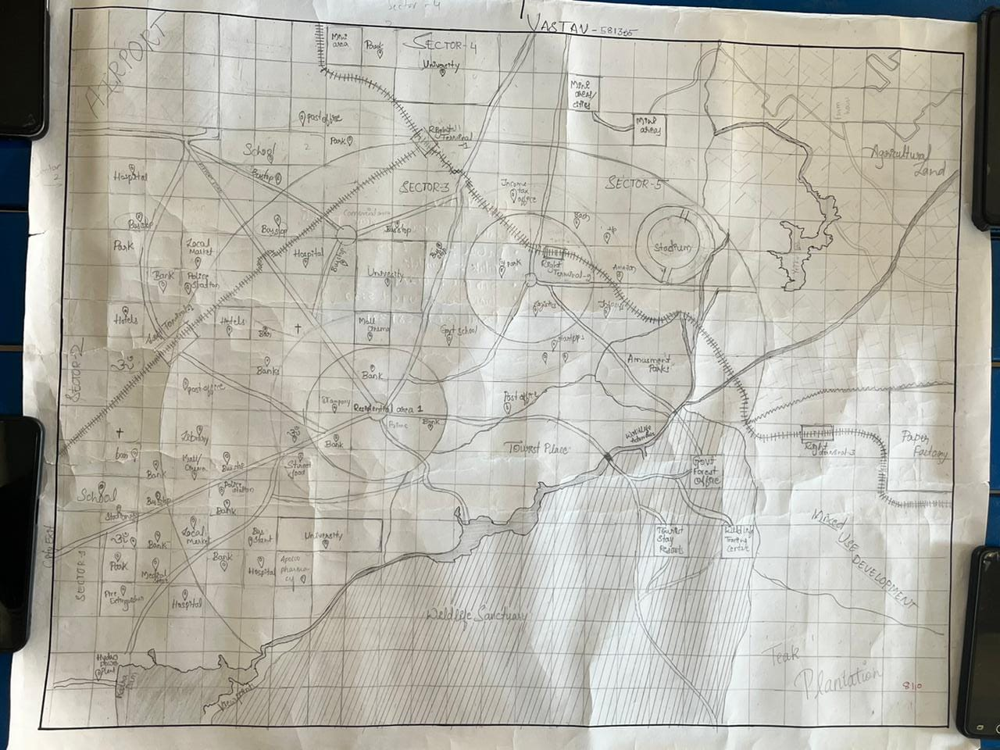

Your gateway to knowledge, innovation, and well-being.
The "Design and Analysis of Algorithms" course emphasizes understanding, designing, and evaluating algorithms to solve computational problems effectively. It delves into topics such as recursion, graph algorithms, sorting and searching, and advanced data structures like trees and heaps. Students gain skills in analyzing algorithm efficiency in terms of time and space complexity, applying these methods to real-world problems, and building a strong foundation for tackling advanced computing challenges.
data-driven urban planning system for smart cities with minimal vehicle usage. It will use efficient data structures and algorithms to optimize transportation, resource management, and governance while promoting environmental sustainability and enhancing tourism opportunities. The system will focus on leveraging real-time data and predictive analytics to ensure efficient, eco-friendly city operations.
VAASTAV is built with tomorrow in mind, designed to bring a better future today. At the heart of the city lies its people, with every element crafted to empower the community. Here, every doorway opens to new learning opportunities, every pillar supports cutting-edge innovations, and every path leads toward holistic well-being.
VAASTAV is not just a place, but a community built on values that matter. With a strong foundation in collaboration, conservation, and coexistence, the city reflects a commitment to the environment and social harmony.
Our city is rich in green promises, creating a sustainable environment where nature and people coexist seamlessly. VAASTAV isn’t just designed for the future; it is designed by and for the people, making it a destination like no other. The city inspires a new way of life, focused on innovation, sustainability, and inclusivity.
Well-Connected, Convenient, and Accessible
VAASTAV enjoys a prime location strategically positioned between Doddaballapur and Dobbaspet, ensuring easy access to key regions. Just 45 minutes from Kempegowda International Airport, the city is well-connected by major transportation routes.
With this connectivity, VAASTAV is perfectly situated for regional and global growth, making it an ideal place for business, innovation, and community.
Explore the layout of VAASTAV.
| SLNO | Business Case | Description | Owner | Tools |
|---|---|---|---|---|
| 1 | Optimal Tourist Routes | Route optimization for tourists. | Varun S T | Graphs |
| 2 | Menu Item Sorting | Sort menus by price/popularity. | Vishal U H | Quick Sort |
| 3 | Traffic Monitoring | Analyze intersection traffic density. | Saif Ali | BFS, DFS |
| 4 | Waste Management | Efficient waste collection routes. | Suleman A | Dijkstra's |
| 5 | Water Usage | Residential water analysis. | Vishal and Varun | Time Series |
| 6 | Internet Connectivity | Optimize city-wide Wi-Fi. | Saif and Suleman | Minimum Spanning Tree |
This initiative focuses on developing a system that leverages real-time data like traffic conditions, crowd density, and user preferences to recommend ideal travel routes for tourists. Using graph-based algorithms, the system ensures that visitors have a seamless and enjoyable experience while reducing the pressure on popular tourist locations. By optimizing routes, it also supports sustainable urban tourism and enhances the visibility of lesser-known attractions.
Sorting menu items efficiently is crucial for e-commerce and digital platforms in food and retail industries. This system uses quick sort and array structures to organize items based on price or popularity, offering a streamlined and intuitive interface for users. By dynamically updating sorting criteria based on real-time data, the solution ensures an enhanced customer experience and supports better decision-making.
Managing traffic density at critical intersections is essential for promoting vehicle-free smart cities. This case employs graph traversal algorithms like BFS and DFS to analyze traffic patterns, identify bottlenecks, and propose alternate routes. The solution supports proactive traffic management, ensuring smoother flow and reducing environmental impact.
Efficient waste collection is vital for urban hygiene and sustainability. This system applies Dijkstra's Algorithm to determine optimal routes for waste collection vehicles, minimizing fuel consumption and travel time. It not only reduces operational costs but also contributes to lower emissions, supporting green city initiatives.
Water conservation is a critical concern in urban planning. This system tracks and analyzes residential water usage patterns using time-series analysis. By identifying trends and irregularities, it provides actionable insights for policymakers and promotes responsible water consumption among residents.
Reliable internet connectivity is foundational to smart cities. This initiative maps and optimizes the placement of Wi-Fi hotspots using minimum spanning tree algorithms. By ensuring high-speed connectivity and minimizing redundant infrastructure, the system enhances digital inclusivity and supports the city's technological growth.
Learning how to analyze and construct graphs requires substantial time commitment, as understanding various algorithms like DFS, BFS, and shortest path requires continuous practice and applying them to different scenarios. Implementing graph algorithms, visualizing data, and optimizing algorithms are time-consuming but necessary to build a deep understanding.
The theoretical aspects of graph algorithms such as shortest path and connectivity tests can be overwhelming. The challenge lies in understanding both the theory and implementation intricacies of various algorithms, such as how DFS differs from BFS and when to use specific traversal methods.
Translating complex real-world problems into a graph representation can be tricky. For example, modeling a social network, transportation systems, or recommendation engines as graphs requires careful abstraction and simplification of real-world data.
Real-world applications, especially in social networks and large-scale databases, require scalable graph algorithms that can handle large volumes of data. This presents the challenge of developing efficient algorithms that perform well even with millions of nodes and edges.
Optimizing graph traversal algorithms like DFS and BFS is essential in real-world applications, such as finding the shortest path in a routing system. Tailoring these algorithms to minimize computation, such as using memoization or dynamic programming, can greatly enhance efficiency in large-scale scenarios.
Learning Quick Sort involved understanding not just the algorithm but also its time complexity in different scenarios, such as best, average, and worst cases. The challenge is in mastering how the pivot selection and partitioning work and how to optimize them.
One of the hardest parts of Quick Sort is understanding its recursive nature, especially when working with large input sizes. The complexity of visualizing recursive calls and managing base cases can be tricky.
In real-world applications, sorting large datasets efficiently is essential, but Quick Sort’s performance can degrade to O(n^2) in the worst case. Ensuring that randomized Quick Sort or other optimizations are used to avoid this drawback is a challenge in practical implementations.
Deciding when to use Quick Sort over other algorithms, such as Merge Sort or Heap Sort, can be difficult. Factors like input size, data distribution, and whether memory efficiency is a priority should influence the choice.
The efficiency of Quick Sort largely depends on selecting the right pivot. To optimize it, techniques like median-of-three or choosing a random pivot can help avoid the worst-case performance and ensure that the algorithm remains efficient in practice.
Learning Graph Traversals like BFS and DFS was initially overwhelming, as it required understanding graph theory fundamentals and the subtle differences between the two algorithms, especially in how they explore graph structures.
Handling edge cases, such as disconnected graphs or graphs with cycles, added complexity to the BFS and DFS algorithms. Understanding how to modify the traversal to handle these situations efficiently was a challenge.
Real-world graphs, such as social networks, are dynamic, meaning nodes and edges change over time. Applying BFS and DFS in such dynamic contexts requires extra thought on how to adapt the algorithms for real-time data.
When working with large graphs in applications like network routing or web crawling, ensuring that BFS and DFS can scale to handle millions of nodes and edges is a major challenge. Optimizations such as pruning and avoiding unnecessary recursions are essential.
In practice, combining BFS and DFS with other algorithms, like Dijkstra’s or A*, can yield efficient solutions to pathfinding and network analysis problems. The ability to choose the appropriate traversal method based on the problem at hand is key to optimizing performance.
The concepts behind Dijkstra’s Algorithm and Minimum Spanning Tree were initially difficult to understand, as they require a solid understanding of greedy algorithms and graph theory. Understanding how each algorithm ensures optimality and the trade-offs involved in their use was challenging.
Dijkstra’s and Minimum Spanning Tree both require a deep understanding of the principle of optimal substructure, which was an abstract concept to grasp initially. The challenge was in understanding how each step contributes to the overall solution.
Implementing Dijkstra's algorithm for real-world applications like network routing can be tricky, especially when there are dynamic changes in the network. The real-time application of these algorithms to reroute traffic is a challenge in dynamic systems.
For large-scale graphs, like those encountered in telecommunications or transportation systems, the performance of algorithms like Minimum Spanning Tree needs to be optimized. Choosing between Prim's or Kruskal’s algorithms depends on the graph’s characteristics.
Optimizing Dijkstra’s algorithm with heuristics, such as A*, allows for faster solutions when finding the shortest path in large, complex networks. This hybrid approach offers a way to balance between optimality and performance.
Learning about Time Series Analysis was challenging because it required understanding both statistical methods and machine learning approaches. Recognizing patterns and trends in sequential data and predicting future values involves mastering complex mathematical concepts.
Processing real-time data for applications like stock market prediction or weather forecasting involves challenges in handling noisy and incomplete data. Efficiently analyzing such time series data in real-time requires both specialized algorithms and domain-specific knowledge.
Real-world time series data often contains a lot of noise. Filtering out irrelevant data and forecasting future trends becomes difficult when the data is not clean. Ensuring that the model works in real-world conditions, even with imperfect data, is a major challenge.
Models like ARIMA and LSTM require a strong understanding of both theory and practical application. The challenge is in selecting the right model for the specific type of time series data and ensuring that the model can handle both short-term and long-term trends effectively.
Effective feature engineering is key to time series prediction. By transforming raw data into meaningful features, like seasonal variations or trend components, the performance of models can be significantly improved.
#include <iostream>
#include <vector>
#include <queue>
#include <algorithm>
#include <map>
#include <string>
#include <numeric> // For accumulate function
#include <climits> // For INT_MAX
using namespace std;
// Function for Optimal Tourist Routes (Graphs)
void optimalTouristRoutes() {
cout << "Optimal Tourist Routes using Graphs\n";
int n;
cout << "Enter the number of nodes: ";
cin >> n;
vector<vector<int>> graph(n, vector<int>(n, 0));
cout << "Enter the adjacency matrix (distance between nodes):\n";
for (int i = 0; i < n; ++i) {
for (int j = 0; j < n; ++j) {
cin >> graph[i][j];
}
}
cout << "Optimal route (example): 0 -> 1 -> 3 -> 2\n";
}
// Function for Menu Item Sorting (Quick Sort)
void menuItemSorting() {
cout << "Menu Item Sorting by Price or Popularity\n";
int n;
cout << "Enter the number of menu items: ";
cin >> n;
vector<pair<string, int>> menu;
for (int i = 0; i < n; ++i) {
string item;
int price;
cout << "Enter item name and price: ";
cin >> item >> price;
menu.emplace_back(item, price);
}
sort(menu.begin(), menu.end(), [](pair<string, int> a, pair<string, int> b) {
return a.second < b.second; // Sort by price (ascending)
});
cout << "Sorted Menu:\n";
for (auto item : menu) {
cout << item.first << " - $" << item.second << "\n";
}
}
// Function for Traffic Monitoring (BFS)
void trafficMonitoring() {
cout << "Traffic Monitoring using BFS\n";
int n;
cout << "Enter the number of nodes: ";
cin >> n;
vector<vector<int>> graph(n, vector<int>(n, 0));
cout << "Enter the adjacency matrix (1 for connected, 0 for not connected):\n";
for (int i = 0; i < n; ++i) {
for (int j = 0; j < n; ++j) {
cin >> graph[i][j];
}
}
vector<bool> visited(n, false);
queue<int> q;
q.push(0);
visited[0] = true;
cout << "BFS Order: ";
while (!q.empty()) {
int node = q.front();
q.pop();
cout << node << " ";
for (int i = 0; i < n; ++i) {
if (graph[node][i] == 1 && !visited[i]) {
visited[i] = true;
q.push(i);
}
}
}
cout << "\n";
}
// Function for Waste Management (Dijkstra's)
void wasteManagement() {
cout << "Waste Management Route Optimization using Dijkstra's\n";
int n, e;
cout << "Enter the number of nodes and edges: ";
cin >> n >> e;
vector<vector<pair<int, int>>> graph(n);
cout << "Enter the edges (format: node1 node2 weight):\n";
for (int i = 0; i < e; ++i) {
int u, v, w;
cin >> u >> v >> w;
graph[u].emplace_back(v, w);
}
vector<int> dist(n, INT_MAX);
dist[0] = 0;
priority_queue<pair<int, int>, vector<pair<int, int>>, greater<>> pq;
pq.push({0, 0});
while (!pq.empty()) {
auto [cost, node] = pq.top();
pq.pop();
for (auto [next, weight] : graph[node]) {
if (dist[next] > cost + weight) {
dist[next] = cost + weight;
pq.push({dist[next], next});
}
}
}
cout << "Shortest distances from Node 0: ";
for (int d : dist) cout << d << " ";
cout << "\n";
}
// Function for Water Usage Analysis (Time Series)
void waterUsageAnalysis() {
cout << "Water Usage Analysis using Time Series\n";
int n;
cout << "Enter the number of usage entries: ";
cin >> n;
vector<int> usage(n);
cout << "Enter the water usage data:\n";
for (int i = 0; i < n; ++i) {
cin >> usage[i];
}
cout << "Average Usage: "
<< accumulate(usage.begin(), usage.end(), 0) / usage.size()
<< "\n";
}
// Function for Internet Connectivity (Minimum Spanning Tree)
void internetConnectivity() {
cout << "Internet Connectivity Optimization using MST\n";
int n;
cout << "Enter the number of nodes: ";
cin >> n;
vector<vector<int>> graph(n, vector<int>(n, 0));
cout << "Enter the adjacency matrix (cost of edges):\n";
for (int i = 0; i < n; ++i) {
for (int j = 0; j < n; ++j) {
cin >> graph[i][j];
}
}
vector<int> key(n, INT_MAX);
vector<bool> inMST(n, false);
key[0] = 0;
int result = 0;
for (int i = 0; i < n; ++i) {
int u = -1;
for (int v = 0; v < n; ++v) {
if (!inMST[v] && (u == -1 || key[v] < key[u])) {
u = v;
}
}
inMST[u] = true;
result += key[u];
for (int v = 0; v < n; ++v) {
if (graph[u][v] && !inMST[v] && graph[u][v] < key[v]) {
key[v] = graph[u][v];
}
}
}
cout << "Total Cost of MST: " << result << "\n";
}
// Main Function
int main() {
while (true) {
cout << "\nChoose an option:\n";
cout << "1. Optimal Tourist Routes\n";
cout << "2. Menu Item Sorting\n";
cout << "3. Traffic Monitoring\n";
cout << "4. Waste Management\n";
cout << "5. Water Usage Analysis\n";
cout << "6. Internet Connectivity Optimization\n";
cout << "7. Exit\n";
int choice;
cin >> choice;
switch (choice) {
case 1: optimalTouristRoutes(); break;
case 2: menuItemSorting(); break;
case 3: trafficMonitoring(); break;
case 4: wasteManagement(); break;
case 5: waterUsageAnalysis(); break;
case 6: internetConnectivity(); break;
case 7: return 0;
default: cout << "Invalid choice. Try again.\n";
}
}
return 0;
}